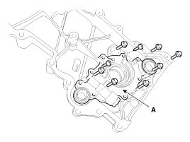
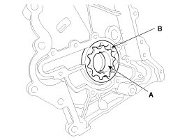
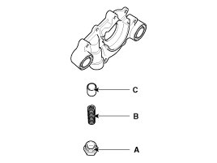
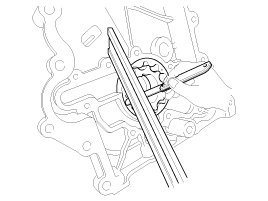
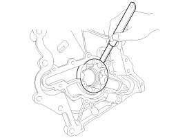
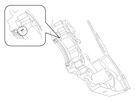

Repair Procedures
Removal and Installation
1. Remove the timing chain cover.
2. Remove the oil pump cover (A).

3. Remove the inner rotor (A) and outer rotor (B).

4. Installation is the reverse order of removal.
Inspection
1. Remove the relief plunger.
Remove the plug (A), spring (B) and relief plunger (C).

2. Inspect the relief plunger.
Coat the plunger with engine oil and check that it falls smoothly into the plunger hole by its own weight.
If necessary, replace timing chain cover.
3. Inspect the relief valve spring.
Inspect for distortion or breakdown of the relief valve spring.
4. Inspect the rotor side clearance.
Using a feeler gauge and precision straight edge, measure the clearance between the inner rotors and precision straight edge.
If the side clearance is greater than maximum, replace the rotors as a set.
If necessary, replace the timing chain cover.
Side clearance:
0.040 - 0.090 mm (0.00157 - 0.00354 in.)

5. Inspect the rotor body clearance.
Using a feeler gauge, measure the clearance between the outer rotor and body.
If the body clearance is greater than maximum, replace the rotors as a set.
If necessary, replace the timing chain cover.
Body clearance:
0.200 - 0.292 mm (0.00787 - 0.01150 in.)

6. Inspect the rotor guide clearance.
(1) Measure the outer diameter of the inner rotor guide.
Inner rotor diameter:
41.550 - 41.570 mm (1.63582 - 1.63661 in.)
(2) Measure the inner diameter of the timing chain cover hole.
Timing chain cover hole diameter:
41.600 - 41.625 mm (1.63779 - 1.63878 in.)
(3) Check the clearance between the timing chain cover hole inner diameter and the inner rotor guide outer diameter.

Guide clearance:
0.030 - 0.075 mm (0.00118 - 0.00295 in.)